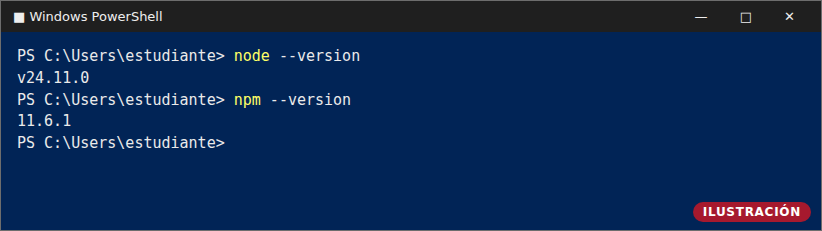
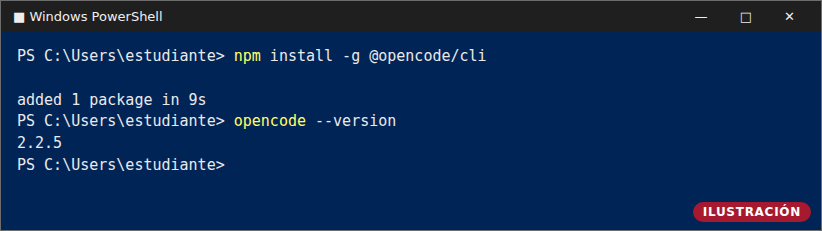
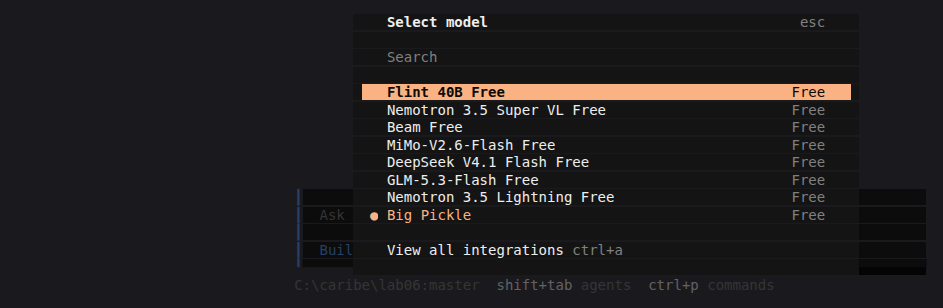
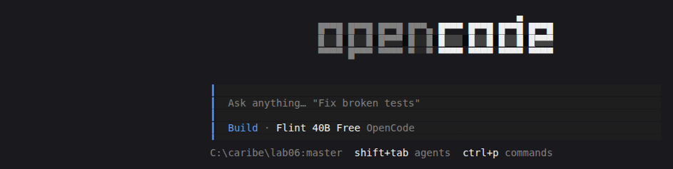
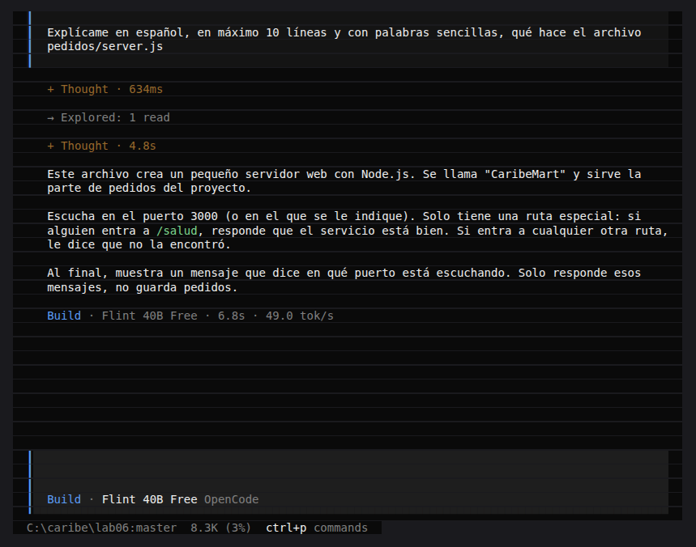
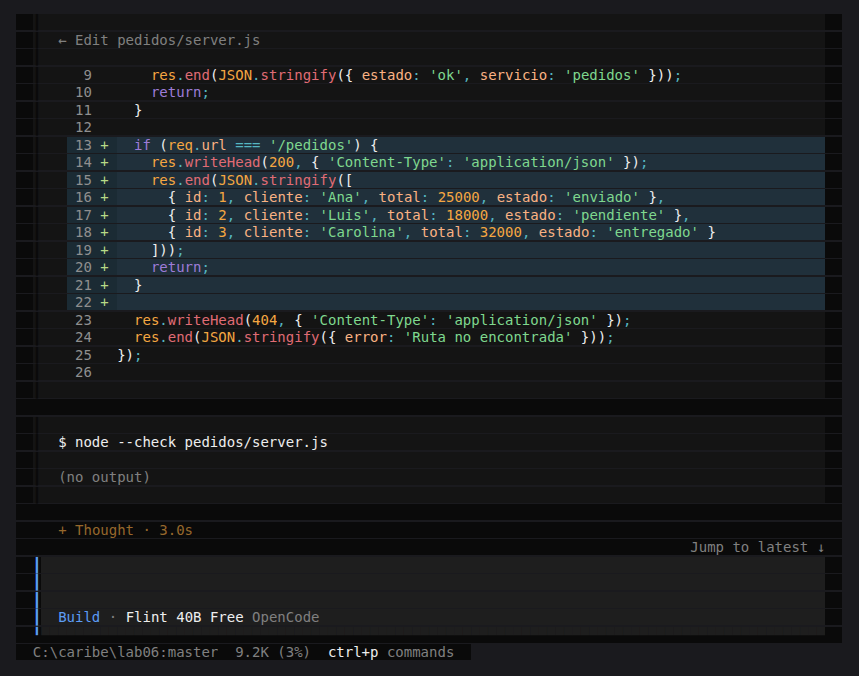
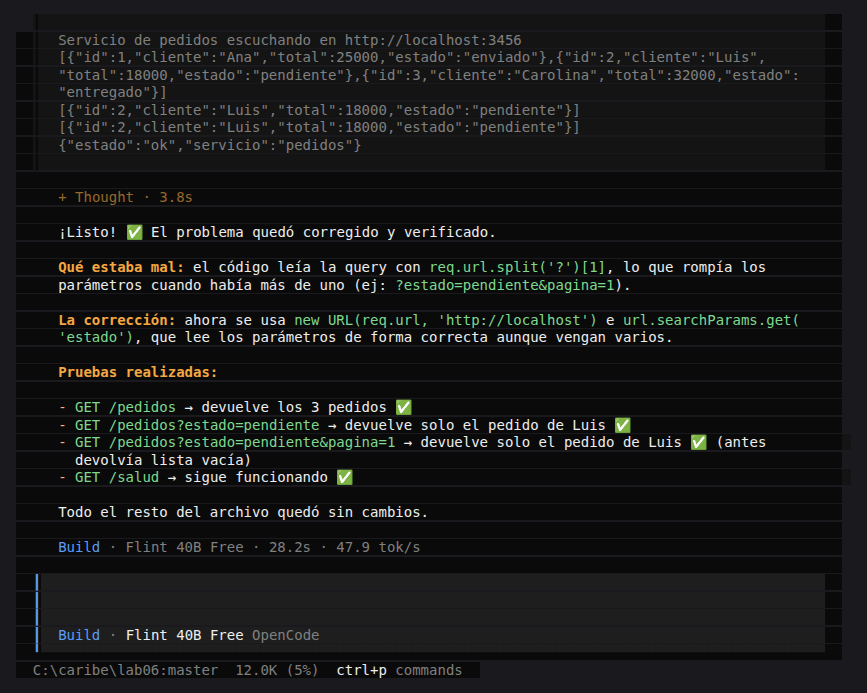
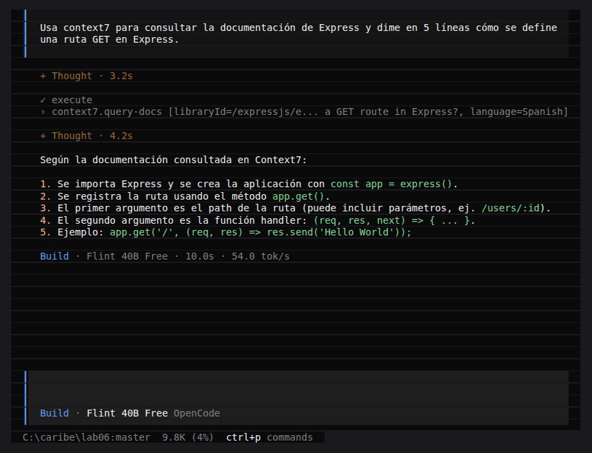

Qué vas a lograr hoy
Trabajarás con un agente de IA dentro de tu terminal: un programa que lee tus archivos, propone cambios y los muestra para que tú los revises. La regla de hoy: la IA propone, tú verificas.
- Instalar opencode en tu PC con Windows y usar un modelo gratuito.
- Pedirle que explique y modifique un archivo del servicio de pedidos de CaribeMart, revisando el diff y corrigiendo sus errores.
- Conectarle una herramienta externa (un MCP) para que consulte documentación actualizada.
Diagrama: elaboración propia.
Es una actividad formativa (sin porcentaje). Lo que entregas son 6 capturas y una reflexión de 5 líneas (Paso 9). No necesitas tener nada instalado: la guía empieza desde cero. Tampoco necesitas Git ni Visual Studio Code.
Paso 1 — Instalar Node.js
opencode se instala con npm, que viene con Node.js. Además, el
servicio de CaribeMart que usarás está escrito en Node.js.
- Entra a nodejs.org y descarga el instalador
LTS para Windows (archivo
.msi). - Abre el archivo descargado y pulsa Next (Siguiente) en todas las pantallas, aceptando la licencia y dejando las opciones como vienen. Al final pulsa Install y Finish.
- Abre PowerShell: menú Inicio, escribe
PowerShelly pulsa Enter. Si ya tenías una ventana abierta, ciérrala y abre una nueva. - Escribe estos dos comandos:
node --version npm --version
Qué debes ver: un número de versión en cada comando (Figura 1).

Si no lo ves: cierra PowerShell, ábrelo de nuevo y repite; si sigue igual, mira “Problemas comunes”.
Paso 2 — Instalar opencode
En la misma ventana de PowerShell, instala opencode con npm (opencode.ai/v2/docs) y comprueba la versión:
npm install -g @opencode/cli
opencode --versionQué debes ver: un número de versión, por ejemplo 2.2.5 (Figura 2).
Esta captura es tu evidencia 1.

Si no lo ves: cierra y abre PowerShell; si falla, mira “Problemas comunes”.
Paso 3 — Preparar la carpeta de práctica
Te damos la carpeta de práctica lista: el servicio de pedidos de CaribeMart.
- Descarga lab06.zip (carpeta de práctica, 1 KB).
- En el Explorador de archivos crea la carpeta
C:\caribe, haz clic derecho sobrelab06.zip→ Extraer todo… y eligeC:\caribe. Debe quedarC:\caribe\lab06\pedidos\server.js. - En PowerShell entra a la carpeta:
cd C:\caribe\lab06 - Prueba que funciona:
Debe aparecernode pedidos\server.jsServicio de pedidos escuchando en http://localhost:3000. Abre en el navegadorhttp://localhost:3000/salud: verás{"estado":"ok","servicio":"pedidos"}. Detén el servicio con Ctrl + C.
¿No pudiste descargar el zip? Crea el archivo a mano
- En PowerShell, crea la carpeta y entra en ella:
mkdir C:\caribe\lab06\pedidos cd C:\caribe\lab06 - Abre el Bloc de notas para crear el archivo:
Cuando pregunte si quieres crear el archivo, pulsa Sí.notepad pedidos\server.js - Copia y pega este código completo en el Bloc de notas y guarda con Ctrl + S:
// CaribeMart - servicio de pedidos (versión mínima para el laboratorio) const http = require('http'); const PORT = process.env.PORT || 3000; const server = http.createServer((req, res) => { if (req.url === '/salud') { res.writeHead(200, { 'Content-Type': 'application/json' }); res.end(JSON.stringify({ estado: 'ok', servicio: 'pedidos' })); return; } res.writeHead(404, { 'Content-Type': 'application/json' }); res.end(JSON.stringify({ error: 'Ruta no encontrada' })); }); server.listen(PORT, () => { console.log('Servicio de pedidos escuchando en http://localhost:' + PORT); }); - Prueba que funciona:
Debe aparecernode pedidos\server.jsServicio de pedidos escuchando en http://localhost:3000. Abre en el navegadorhttp://localhost:3000/salud: verás{"estado":"ok","servicio":"pedidos"}. Detén el servicio con Ctrl + C.
Si no lo ves: escribe dir pedidos; el archivo debe llamarse
server.js y no server.js.txt (mira “Problemas comunes”).
Paso 4 — Primer arranque y elección del modelo
opencode ya trae modelos gratuitos: no necesitas registrarte en nada. Siempre se arranca dentro de la carpeta del proyecto, porque el agente trabaja sobre los archivos de esa carpeta.
- En PowerShell, desde
C:\caribe\lab06, escribe:
Verás la pantalla de la Figura 3.opencode - Escribe
/modelsy pulsa Enter. Aparece la lista de modelos (Figura 4). - Elige con las flechas uno que diga Free (por ejemplo Flint 40B Free) y pulsa Enter. Abajo debe aparecer el nombre del modelo elegido (Figura 5). Esta captura es tu evidencia 2.

/models: elige uno marcado como Free.
Si no lo ves: comprueba que estás en C:\caribe\lab06 antes de escribir opencode.
Si más adelante un modelo responde con un error de límite, elige otro Free (mira “Problemas comunes”).
Paso 5 — Pedirle que explique el archivo
Escribe en opencode y pulsa Enter:
Explícame en español, en máximo 10 líneas y con palabras sencillas, qué hace el archivo pedidos/server.jsQué debes ver: el agente lee el archivo (Explored: 1 read) y responde con una
explicación (Figura 6). Esta captura es tu evidencia 3. Compárala con el código del Paso 3:
¿dice algo que no es cierto?

server.js (evidencia 3). La redacción de tu modelo será distinta.Si no lo ves: espera unos segundos; si aparece un error, elige otro modelo Free con /models y repite.
Paso 6 — Un cambio pequeño y revisar el diff
Ahora le pedirás que modifique el archivo. Escribe:
Agrega a pedidos/server.js una ruta GET /pedidos que devuelva una lista JSON de 3 pedidos de ejemplo con id, cliente, total y estado. No cambies nada más.Qué debes ver: el diff: las líneas con + y fondo verde azulado son las que el agente
añadió (Figura 7). Esta captura es tu evidencia 4. Léelo antes de seguir: ¿cambió solo lo que
pediste? Si cambió algo más, escribe Deshaz ese cambio.

/pedidos (evidencia 4).Pruébalo: abre una segunda ventana de PowerShell (deja opencode abierto), ejecuta
cd C:\caribe\lab06 y luego node pedidos\server.js. Abre
http://localhost:3000/pedidos en el navegador: debes ver la lista de 3 pedidos.
Cuando termines, detén el servicio con Ctrl + C.
Si no lo ves: el servicio se reinicia a mano; deténlo con Ctrl + C y vuelve a ejecutar node pedidos\server.js.
Paso 7 — Encontrar y corregir un error de la IA
La IA puede equivocarse y sonar segura. Aquí practicas verificar. Pide un filtro:
Ahora haz que GET /pedidos?estado=pendiente devuelva solo los pedidos con ese estado. Sin el parámetro, devuelve todos.- Detén y vuelve a iniciar el servicio en la segunda ventana (
node pedidos\server.js). - Prueba estas tres direcciones en el navegador:
Las tres deberían devolver solo el pedido de Luis. Si alguna devuelvehttp://localhost:3000/pedidos?estado=pendiente http://localhost:3000/pedidos?estado=pendiente&pagina=1 http://localhost:3000/pedidos?pagina=1&estado=pendiente[], encontraste el error: el código lee mal el parámetro cuando hay más de uno. - Díselo al agente con tus palabras y la prueba que falló:
Probé /pedidos?estado=pendiente&pagina=1 y devuelve una lista vacía; debería devolver el pedido de Luis. Corrige cómo lees el parámetro estado usando URL y searchParams. - Reinicia el servicio y repite las tres pruebas: ahora deben funcionar.
Qué debes ver: la explicación del agente sobre qué estaba mal y la corrección (Figura 8). Esta captura es tu evidencia 5, junto con tu explicación del error en una línea.

Si no lo ves: si tu modelo ya lo hizo bien, pruébalo igual y pide
Explícame cómo lees el parámetro estado y qué casos no cubre; anota lo que verificaste.
Paso 8 — Conectar un MCP: Context7
Un MCP es una herramienta externa que el agente puede llamar. Context7 le da acceso a la documentación actualizada de librerías; es remoto y no requiere clave.
- Cierra opencode escribiendo
/exit(o con Ctrl + C dos veces). - En PowerShell, dentro de
C:\caribe\lab06, crea el archivo de configuración:
Responde Sí para crearlo, pega este contenido y guarda con Ctrl + S:notepad opencode.json{ "$schema": "https://opencode.ai/config.json", "mcp": { "context7": { "type": "remote", "url": "https://mcp.context7.com/mcp", "enabled": true } } } - Abre opencode de nuevo (
opencode) y escribe:Usa context7 para consultar la documentación de Express y dime en 5 líneas cómo se define una ruta GET en Express.
Qué debes ver: una línea con context7.query-docs (la llamada a la herramienta) y luego la
respuesta (Figura 9). Esta captura es tu evidencia 6.

context7.query-docs (evidencia 6).Si no lo ves: comprueba que opencode.json está en C:\caribe\lab06 (no
opencode.json.txt) y que abriste opencode desde esa carpeta.
Paso 9 — Evidencias a entregar
Entrega 6 capturas numeradas, una por paso, y tu reflexión. Actividad formativa: no tiene porcentaje.
- 1. Versión instalada (Paso 2):
opencode --versioncon el número visible. - 2. Modelo elegido (Paso 4, Figura 5): el nombre del modelo Free visible.
- 3. Explicación del archivo (Paso 5, Figura 6).
- 4. Diff revisado (Paso 6, Figura 7).
- 5. Error corregido (Paso 7, Figura 8), con tu explicación del error en una línea.
- 6. Llamada a context7 (Paso 8, Figura 9).
Reflexión de 5 líneas (escrita por ti):
- ¿Qué le delegaste al agente y qué hiciste tú?
- ¿Qué error encontraste y cómo lo detectaste?
- ¿Qué habría pasado si hubieras aceptado el cambio sin probarlo?
- ¿Para qué te sirvió conectar Context7?
- ¿Qué tareas de tu futuro trabajo delegarías a un agente y cuáles no?
Problemas comunes
La red de la CUC no bloquea los servicios de modelos. Si algo falla, busca aquí:
| Síntoma | Qué hacer |
|---|---|
PowerShell dice que la ejecución de scripts está deshabilitada (al usar npm) |
Escribe Set-ExecutionPolicy -Scope CurrentUser RemoteSigned, responde S y repite el comando. |
node, npm u opencode “no se reconoce como comando” |
Cierra PowerShell y abre uno nuevo (el PATH se actualiza al abrir). Si persiste, reinicia el PC. Si falla solo opencode, repite el Paso 2. |
| Un modelo Free responde Free usage limit reached (límite) | Espera unos minutos o elige otro modelo Free con /models. |
| El antivirus o SmartScreen bloquea la instalación | Pulsa Más información → Ejecutar de todos modos o permite el programa en el antivirus; si no puedes, avisa al docente. |
El archivo se guardó como server.js.txt o opencode.json.txt |
En el Explorador: pestaña Vista → marca Extensiones de nombre de archivo y cámbiale el nombre. |
| EADDRINUSE: el puerto 3000 está ocupado | Usa otro puerto: $env:PORT=3001; node pedidos\server.js y cambia 3000 por 3001 en el navegador. |
opencode --version muestra 1.x |
Ejecuta npm uninstall -g opencode-ai y repite npm install -g @opencode/cli. |
Lo que viene
Semana 13 — Lab A (5 %): conectar un MCP a la API de CaribeMart, para que el agente consulte y actúe sobre los datos del caso. Lo de hoy (instalar, revisar diffs, configurar un MCP) es la base.